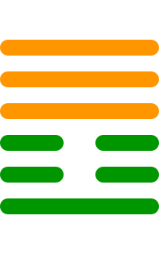

第二十五卦
无妄卦

卦辞
元亨，利贞。其匪正有眚，不利有攸往。
无妄卦象征无妄、真诚与正直。卦辞意为：大亨通，利于坚守正道。如果不正则有灾害，不利于有所往。无妄卦教导我们要保持真诚，不要有妄念。
彖传
无妄，刚自外来，而为主于内。动而健，刚中而应，大亨以正，天之命也。其匪正有眚，不利有攸往。无妄之往，何之矣？天命不祐，行矣哉？
彖传说：无妄，刚从外而来，而在内为主。动而健，刚中而应，大亨通以正，这是天命。如果不正则有灾害，不利于有所往。无妄的往，去哪里呢？天命不保佑，怎么行呢？
象传
天下雷行，物与无妄。先王以茂对时育万物。
象传说：天下雷行，万物与无妄。先王应当效法这种精神，茂盛地应对时令，养育万物。雷行天下象征真诚的力量，要顺应自然规律。
爻辞
初九：无妄，往吉
无妄，前往吉祥。
初九爻位于最下方，真诚无妄。没有妄念，前往吉祥，表示真诚的行动会带来好运。
六二：不耕获，不菑畬，则利有攸往
不耕获，不开垦熟地，则利于有所往。
六二爻得中得正，不妄求利。不耕种而收获，不开垦熟地，表示不妄求利益，这样才利于行动。
六三：无妄之灾，或系之牛，行人之得，邑人之灾
无妄的灾害，或者系牛，行人得之，邑人受灾。
六三爻位置不当，无故受灾。无缘无故的灾害，比如系着的牛被行人牵走，而邑人受灾，表示无辜受害。
九四：可贞，无咎
可以坚守正道，没有灾害。
九四爻阳刚得位，坚守正道。可以坚守正道，没有灾害，表示坚持真诚的态度。
九五：无妄之疾，勿药有喜
无妄的疾病，不用药有喜。
九五爻居中尊位，自然痊愈。无缘无故的疾病，不用药物自然痊愈，有喜事，表示真诚能化解问题。
上九：无妄，行有眚，无攸利
无妄，行有灾害，无所利。
上九爻位于极点，不宜行动。虽然真诚无妄，但行动会有灾害，无所利益，表示时机不当。